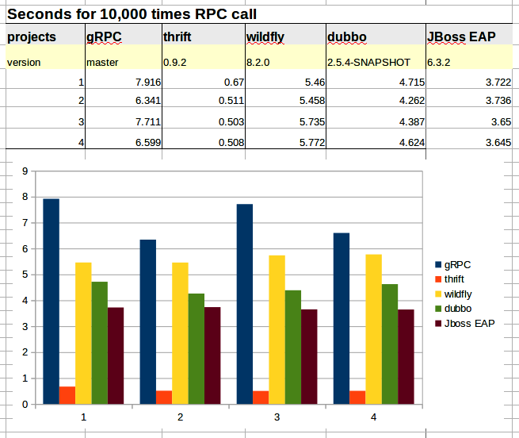

永源科技做的一个RPC框架的性能测试。
原文： RPC框架性能基本比较测试
gRPC是Google最近公布的开源软件，基于最新的HTTP2.0协议，并支持常见的编程语言。 我们知道HTTP2.0是基于二进制的HTTP协议升级版本，目前各大浏览器都在快马加鞭的加以支持。 我们可以设想一下，未来浏览器支持HTTP2.0，并通过现有开源序列化库比如protobuf等，可以直接和各种语言的服务进行高效交互，这将是多么“美好”的场景！
gPRC的Java实现底层网络库是Netty，而且是用到最新的Netty5.0.0.Alpha3的开发版本，因为最新版本针对HTTP/2做了很多改进。 为了跨语言，gPRC也和其他方案一样，采用了类似古老IDL的接口描述语言，利用自家的Protobuf项目带的protoc编译器来生成框架代码。这和目前最流行的Facebook开源的，现为Apache顶级项目的Thrift原理一致。
我比较好奇，这个新出世的框架的性能怎么样，和现有的RPC开源方案比较如何。就花了一些时间进行简单比较。 我选择了以下五种开源项目进行测试：gRPC, Thrift, Wildfly, Dubbo, JBoss EAP。 为了简化，测试范例都使用项目自带的demo或者sample等进行简单修改，使得跨进程网络调用次数一致。
RPC框架
gRPC
- 从Github master主干上获得最新版本，按照说明文件进行编译。如上所述，网络框架是Netty5，基于最新的HTTP/2.
- 测试例子为 RouteGuideClient
- IDL为 route_guide.proto
- 选择其中getFeature方法，去除不用的语句和屏幕输出，进行10,000次同步调用。
|
|
|
|
多次执行，记录需要的时间。
gRPC还有一种非阻塞的调用方法，不过因为时间有限，为了简化测试，我只用标准的server启动的方式，asyncStub在大并发访问时出错，用时也较长，故这次测试没有这种方法的结果数据。
Thrift
- 从Apache网站获得最新的0.9.2版本，本机编译获得C的编译器和Java运行环境。
- 测试例子为 JavaClient.java
- IDL tutorial.thrift
|
|
Wildfly 8.2.0
Wildfly是JBossAS改名后的JBoss应用服务器，实现了完整的JavaEE规范。我们知道JavaEE中远程RPC调用是在EJB规范中定义的。我们这里就是要测试Wildlfy中的远程EJB调用能力，
- 选用的Wildfly8.2是目前发布的最新稳定版本。这个版本也支持端口多路服用，也就是EJB远程调用是通过HTTP端口复用来进行的，利用HTTP的Upgrade机制做到二进制运行时刻协商升级。尽管不是纯粹的HTTP/2，但也运行机理也相差无几。
- 测试例子选用jboss-eap-quickstarts项目中的远程ejb调用例子 RemoteEJBClient.java
- 纯Java的RPC方案好处是不需要再有IDL文件定义和编译生成代码的过程，只要商议好接口就可以了
|
|
|
|
调用无状态的SessionBean方法10,000次,对应的远程EJB服务是部署在Wildfly应用服务器中的EJB。
Dubbo 2.5.4-SNAPSHOT
Dubbo是阿里集团开源的一个RPC框架，在很多互联网公司和企业应用中广泛使用。协议和序列化框架都可以插拔是及其鲜明的特色。同样的远程接口是基于Java Interface，并且依托于spring框架方便开发。可以方便的打包成单一文件，独立进程运行，和现在的微服务概念一致。
- 采用github中master主干，目前版本是 2.5.4-SNAPSHOT
- 测试例子选用其中的demo进行修改 DemoAction.java
|
|
|
|
调用完毕后查看输入log文件获得运行时间。
Redhat JBoss EAP 6.3.2
EAP是JBossAS的商业版本，实现了完整的JavaEE规范。
- EAP6基于AS7.2以后的版本构建，红帽提供商业支持。
- AS7在7.2以后，社区版没有再发布，具备能力的企业可以从源码进行编译使用，EAP6.3基于AS7.4分支构建，很快发布的EAP6.4基于AS7.5分支构建，不出意外这个会是最后一个EAP6的minor版本。
- AS7还没有像Wildfly完全采用端口复用的方式，短程EJB调用通过独立端口完成，基于JBossRemoting3的网络连接管理能力。
- 测试例子依然选用jboss-eap-quickstarts项目中的远程ejb调用例子
|
|
记录一万次调用后的时长。
测试结果
最终经过4轮测试，不间断运行10,000次远程RPC调用后的结果如下：

我们可以看到Thrift的效率最高，大概领先一个数量级。而其他三个项目的性能数据在同数量级中，由高到低分别为JBossEAP, dubbo, wildfly和gRPC。
需要说明的有以下几点：
- 为了简化测试，我并没有选择同样的调用接口，而是顺手用了项目自带的，方便修改的示例程序。其中gRPC和Thrift的接口有对象传递，稍微复杂一些。
- 不是严格的性能测试流程，比如没有做预热过程，以及测试都运行在我的桌面用机上，没有完全恢复成“干净”的状态。
- 都是简单的服务器单一进程实例，标准示范例子，没有做特别优化和设置多个线程池之类的。而客户端调用也是最简单的阻塞式多次调用压力测试。应该是用多个机器多连接，多个线程，以及异步非阻塞的调用多种环境进行测试更为客观，有机会再继续完善。
- 之前没有看到过基于HTTP/2的RPC调用性能比较，理论上是应该低于经典的基于端口的RPC方案的。这个测试结果可以简单印证这个猜想。Thrift的数据遥遥领先.gRPC还在开发之中，基于的Netty还是alpha版本，而且非阻塞的方式还没有最后的数据。我想耐心一些，给gRPC一些时间，它会让我们惊艳的。
- Wildfly表现良好，要知道它的服务端可是完整的JavaEE服务器啊。不过有时间的化，我试试看经典RMI连接的效率如何，要是能和thrift一个数量级就更好了。
- dubbo性能也很出色，而且协议层可以更换的话，应该还能有更大提升。
- 我的测试在一台过时的笔记本上，受条件限制，没有先进的G级网络和多台服务器进行标准化性能测试。如果哪位在互联网或者企业工作的朋友有条件，也愿意充分完成这个测试，请和我联系，我会完整介绍我的测试搭建环境，共享代码，并帮助完成。我想那个结果会更有意义。
补记
最初四个测试时间为2015-03-11，03-21加入EAP6.3.2的测试，为基于JBossRemoting的EJB远程调用测试，性能良好。和thrift进入一个数量级，EJB功能可是很丰富的，带有事务，安全等高级企业级组件特性。
Wildfly8经过配置后使用和EAP类似的远程调用选项，效率和EAP应该是一致的。